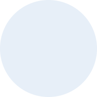
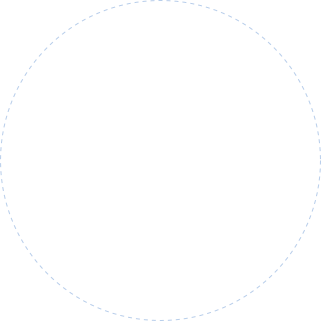
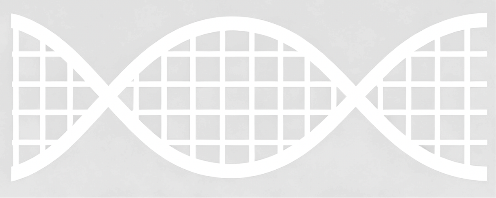
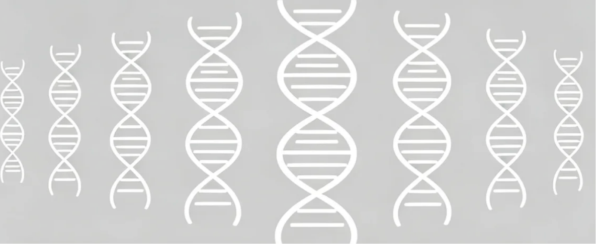
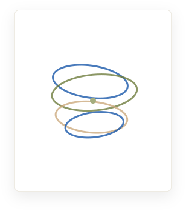

全链贯通
从科学问题、计算设计持续推进到实验验证和反馈迭代

面向重要复杂科研任务的可信科研执行平台，以学科模型和专业能力为基础，贯通数据、计算与实验，将每一次执行沉淀为可追溯、可复现、可持续迭代的科研资产
在线使用


既懂学科、也贯通科研全链路，将每一步执行沉淀为可复用、可追溯的科研产物，并以安全可控、开放互联的体系支撑复杂科研任务
从科学问题、计算设计持续推进到实验验证和反馈迭代
理解专业知识，更掌握领域中的数据、工具、标准方法和研究范式

交付图表、数据、代码、结构文件、实验方案和研究报告，而不是一段不可复用的回答

证据随执行产生，产物与来源绑定，关键结论可追溯、可复核

数据尽量留在科研现场，外部访问经过授权，代码与工具在隔离环境中执行

通过标准接口接入模型、数据、工具、智能体、算力和实验设施

从科学问题、计算设计持续推进到实验验证和反馈迭代
提出问题文献调研假设生成
方案设计
湿实验实验数据获取结果分析
结果可靠性判断
再次验证方案修正
理解专业知识，更掌握领域中的数据、工具、标准方法和研究范式


开放靶标平台（Open Targets Platform）是一个整合了基因组学、化学和药物数据的综合性平台，旨在加速药物靶标发现和验证。
 CZ-CELLXGENE-SINGLE-CELL-
CZ-CELLXGENE-SINGLE-CELL-CZ CELLxGENE 是一个专注于单细胞转录组学数据的开放平台，提供高质量的单细胞 RNA 测序数据集，支持科研人员进行细胞类型鉴定、基因表达分析和生物标记物发现等研究。
 NCI-GENOMIC-DATA-COMMONS-
NCI-GENOMIC-DATA-COMMONS-NCI Genomic Data Commons（GDC）是美国国家癌症研究所建立的基因组数据共享平台，旨在整合和标准化癌症基因组数据，为研究人员提供高质量的数据资源。
 AFDB-ALL
AFDB-ALL由 DeepMind 和 EMBL-EBI 维护，提供 AlphaFold2 预测的蛋白质三维结构，覆盖 UniProtKB 中的蛋白质。

BUCHWALD-HART化学反应数据集，C-N键构建反应，用于训练机器学习模型，预测反应产率(yield)或是否反应成功，比较不同催化体系（配体、金属、碱等）对产率的影响，构建模型预测最优温度、溶剂、配体组合。

IVY-GLIOBLASTOMIvy Glioblastoma Atlas Project (Ivy GAP) 是一个专注于胶质母细胞瘤 (GBM) 研究的开放数据平台，由艾伦脑科学研究所发起。该项目提供了全面的胶质母细胞瘤分子和细胞水平的数据集。
多组学整合 - 整合多组学：基因表达、蛋白质数据、途径富集和代谢途径。使用此技能进行多组学任务，包括获取跨癌症的基因表达、通过加入获取 uniprotkb 条目、获取功能富集 kegg 获取。组合了来自 4 个 SCP 服务器的 4 个工具。
DrugSDA-Tool 是面向药物分子筛选、设计与分析的综合性辅助工具集，集成了基于 Open Babel、RDKit、BioPython 等多种开源库的核心功能，支持数据检索与下载、格式转换、蛋白质结构修复、分子规范化处理、分子结构解析、分子相似度计算、结合口袋属性分析等关键操作。
计算气象和气候科学的大气参数，包括科里奥利参数、地转风、热量指数、位温和露点。
这是一款面向科学研究的统一知识查询服务，集成了生命科学、地球科学、材料科学、数学物理等多个学科领域的知识图谱数据，支持多学科知识检索、实体关系查询、领域知识问答等操作，为 AI 辅助科学研究提供强大的知识支撑。
由社区知名方法论布道者花叔（alchaincyf）开发，是女娲学习方法论 Skill。它解决的是知识工作者输入过多、输出过少、读了很多论文但无法形成知识体系、无法持续输出的痛点，强调先建框架再填内容，让 Claude 帮用户搭建个人知识库并激发写作灵感。
这是一款面向基因组学与变异分析的知识图谱查询服务，集成了基因、变异位点、疾病表型、GO 功能注释等多维度生物医学知识，为全基因组关联研究提供强大的知识支撑。
交付图表、数据、代码、结构文件、实验方案和研究报告，而不是一段不可复用的回答

构建可追溯知识地图，梳理证据层级与研究演进；识别共识、争议及证据缺口，辅助选题、问题收敛与假设生成

将科研问题转化为可检验定量结论，体现效应大小、不确定性与稳健性，支撑组间对比、风险研判及后续实验决策阈值设置

交付图表、数据、代码、结构文件、实验方案和研究报告，而不是一段不可复用的回答

沉淀可审查、复现、迁移的方法资产，记录依赖、参数与版本，支持复跑及二次分析

将分析结论转为验证路径，明确变量、对照、指标与标准，提升因果识别与实验效率

探索难实验的结构与机制，对比方案生成预测，缩小实验空间、降低试错成本

整合证据、方法与结论形成科研叙事，支持协作评审，沉淀组织知识资产
证据随执行产生，产物与来源绑定，关键结论可追溯、可复核
关联原始文献、数据库来源、引用位置与检索时间；保留证据摘录及其与综述结论的对应关系
[01]
[05] [10]
关键结论 [12] [18]01 import scanpy as sc
02 adata = sc.read_h5ad(data)
03 result = run_analysis(adata)
04 export(result, 'artifact.csv')
已补充对照、功效分析与停止标准
研究者已确认• 是否缺少阴性对照？
• 样本量依据是什么？
• 何时停止实验？
● 来源完整
● 数字一致
● 数字可复现
○ 结论边界
1 项待作者确认数据尽量留在科研现场，外部访问经过授权，代码与工具在隔离环境中执行

通过标准接口接入模型、数据、工具、智能体、算力和实验设施

Intern-S2 主导科学推理与任务执行，World Model 驱动实验状态理解与结果推演，SCP 统筹资源连接、流程编排与协作治理


从科学理解、复杂推理到世界建模，为科研智能体提供持续演进的核心能力
面向 AI for Science 的“万能转换器”，让研究者和 AI 智能体共用一套方式发现、调用和组合数据、模型、工具乃至真实实验设备，并记录实验
千亿级参数科学大模型支撑，从“回答科学问题”走向“理解复杂科学信息、组织长程科研任务、调用工具验证方案，并持续迭代”
支撑干湿实验贯通，将大语言模型推演的“实验方案”推进到“真实环境的实验验证”，并能“持续获取真实结果迭代实验方案”
携手顶尖科研机构，跨越多学科前沿，让 AI 从模型能力走向真实科研成果
基于扩散大语言模型统一建模自然语言、蛋白质序列、功能理解与序列设计，实现从“理解蛋白质”到“设计蛋白质”的跨越

携手全球顶尖科研机构共同推动人工智能在科学研究中的深度应用
选择适合你的方式，开始使用书生·端砚